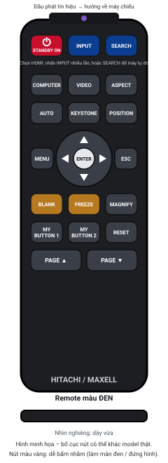
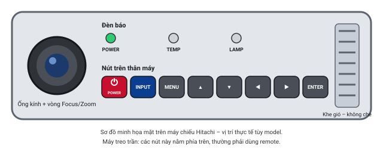
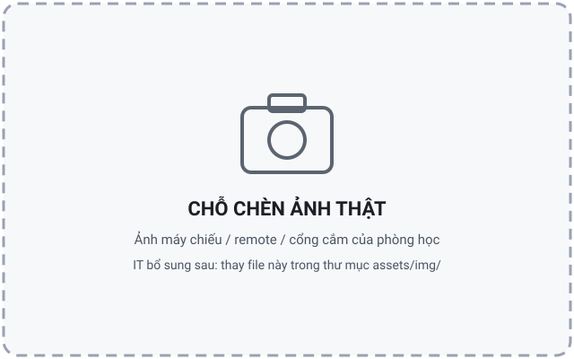

Máy chiếu Hitachi
Model đang dùng tại trường: [MODEL]. Máy Hitachi đời mới có thể mang nhãn Maxell (cùng nhà sản xuất từ 2018) – nút bấm và menu tương tự.
Lưu ý
Tên nút, thứ tự menu và ý nghĩa đèn báo dưới đây là phổ biến cho dòng máy Hitachi/Maxell dùng trong lớp học. Model thực tế có thể khác đôi chút – hãy đối chiếu với nhãn in trên máy và remote của phòng.
3 thao tác hay dùng nhất
- Bật máy: nhấn STANDBY/ON 1 lần (remote hoặc thân máy) → đèn POWER nhấp nháy xanh → sáng xanh ổn định sau 30–60 giây là sẵn sàng.
- Chọn HDMI: nhấn INPUT nhiều lần cho đến khi góc màn hình hiện HDMI 1 (hoặc HDMI 2 – theo cổng đang cắm). Hoặc nhấn SEARCH để máy tự dò nguồn có tín hiệu.
- Tắt máy: nhấn STANDBY/ON → màn hình hỏi Power off? → nhấn STANDBY/ON lần nữa trong 5 giây → đợi quạt ngừng, đèn POWER sáng cam ổn định rồi mới rút điện (nếu cần).
Sơ đồ nút thường gặp

assets/img/.

Ý nghĩa các nút
- STANDBY/ONBật / tắt máy. Tắt cần nhấn 2 lần (lần 2 để xác nhận).
- INPUTĐổi nguồn vào: COMPUTER IN 1 → 2 → HDMI 1 → HDMI 2 → VIDEO… Nhấn nhiều lần đến khi đúng HDMI.
- SEARCHTự dò cổng nào đang có tín hiệu. Tiện khi không nhớ dây cắm cổng nào.
- COMPUTER / VIDEONhảy nhanh đến nhóm cổng máy tính / video. Với HDMI, dùng INPUT hoặc SEARCH.
- MENU / ENTER / ESCMở menu, chọn, thoát. Các mũi tên ▲▼◀▶ để di chuyển.
- AUTOTự căn hình (chủ yếu cho cổng máy tính VGA; với HDMI thường không cần).
- KEYSTONEChỉnh méo hình thang (trên to dưới nhỏ). Dùng ▲▼ để chỉnh.
- ASPECTĐổi tỉ lệ khung hình: NORMAL / 4:3 / 16:9 / 16:10. Chọn NORMAL nếu không rõ.
- POSITIONDịch chuyển vị trí hình (chỉ có tác dụng với một số nguồn).
- BLANKDễ bấm nhầm Tạm tắt hình (màn đen/xanh). Nhấn lại để có hình.
- FREEZEDễ bấm nhầm Đóng băng hình đang chiếu. Nhấn lại để bỏ.
- MAGNIFY ON/OFFPhóng to một vùng hình. Nhấn OFF để về bình thường.
- MY BUTTON 1 / 2Nút gán chức năng tùy chọn (IT cài sẵn). Không nên đổi.
- RESETĐưa mục đang chọn trong menu về mặc định. Không nhấn nếu không rõ.
- PAGE UP / DOWNChuyển slide khi máy chiếu nối USB với laptop (không phải máy nào cũng có).
Chọn nguồn HDMI
- Nhìn đầu cáp HDMI cắm vào máy chiếu (hoặc hộp/ổ trên tường) để biết là HDMI 1 hay HDMI 2.
- Nhấn INPUT trên remote (hoặc thân máy). Góc màn hình hiện tên nguồn hiện tại.
- Nhấn tiếp INPUT từng lần, đợi 2–3 giây mỗi lần, đến khi hiện đúng HDMI 1/2.
- Không nhớ cổng nào? Nhấn SEARCH – máy tự dò và dừng ở cổng có tín hiệu (mất 10–20 giây).
- Vẫn No Signal? Xem mục No Signal.
Ý nghĩa đèn báo trạng thái
Máy Hitachi thường có 3 đèn: POWER, TEMP, LAMP. Đây là ý nghĩa phổ biến – cần đối chiếu với model thực tế.
| Đèn POWER | Đèn TEMP / LAMP | Ý nghĩa | Việc cần làm |
|---|---|---|---|
| Cam sáng ổn định | Tắt | Đang chờ (standby), đã có điện | Nhấn STANDBY/ON để bật |
| Xanh nhấp nháy | Tắt | Đang khởi động (làm nóng đèn) | Đợi 30–60 giây |
| Xanh sáng ổn định | Tắt | Đang hoạt động bình thường | Chọn HDMI, sử dụng |
| Cam nhấp nháy | Tắt | Đang làm mát sau khi tắt | Đợi 1–2 phút, không rút điện, không bật lại |
| Đỏ nhấp nháy | TEMP đỏ | Quá nhiệt / khe gió bị che / lọc bụi bẩn | Tắt máy, để nguội, kiểm tra khe gió, gọi IT |
| Đỏ nhấp nháy | LAMP đỏ | Bóng đèn lỗi / hết tuổi thọ / nắp đèn chưa đóng | Gọi IT, không tự mở máy |
| Đỏ sáng ổn định | Bất kỳ | Lỗi cần bảo trì | Tắt máy, gọi IT |
| Không sáng | Tắt | Không có điện | Kiểm tra ổ cắm, dây nguồn, công tắc – mục 1 |
Thông báo hay gặp trên màn hình
- NO INPUT IS DETECTEDKhông có tín hiệu từ laptop → mục No Signal.
- SYNC IS OUT OF RANGEĐộ phân giải laptop quá cao/không hỗ trợ → giảm về 1920×1080 hoặc 1280×800 (hướng dẫn).
- CHECK THE AIR FLOWKhe gió bị che hoặc lọc bụi bẩn → dọn quanh máy, để nguội; lặp lại thì gọi IT.
- REMINDER … LAMP / FILTERĐến kỳ thay bóng / vệ sinh lọc bụi → nhấn ESC để tắt thông báo, báo IT.
- Ổ khóa 🔒 / KEY LOCKNút bị khóa → dùng remote; báo IT nếu cả remote cũng bị khóa.
Tắt máy đúng cách (giúp bóng đèn bền hơn)
- Nhấn STANDBY/ON một lần → màn hình hiện Power off?
- Nhấn STANDBY/ON lần nữa trong vòng 5 giây để xác nhận.
- Đèn POWER nhấp nháy cam, quạt vẫn chạy: máy đang làm mát (1–2 phút).
- Khi quạt ngừng và đèn POWER sáng cam ổn định → mới được rút điện (nếu phòng yêu cầu).
Không rút điện hoặc tắt cầu dao khi quạt đang chạy. Không bật lại ngay khi đang làm mát.
Mẹo nhỏ khi dùng máy Hitachi
- Muốn tạm che màn hình khi giải thích: nhấn BLANK; nhớ nhấn lại để có hình.
- Chữ nhỏ: nhấn MAGNIFY ON rồi dùng mũi tên di chuyển vùng phóng to; MAGNIFY OFF để thoát.
- Quạt kêu to: IT có thể đã cài Eco mode; không tự đổi trong Menu.
- Hình lộn ngược: Menu → SETUP → MIRROR → chọn NORMAL hoặc H&V INVERT tùy cách lắp (xem mục 7).